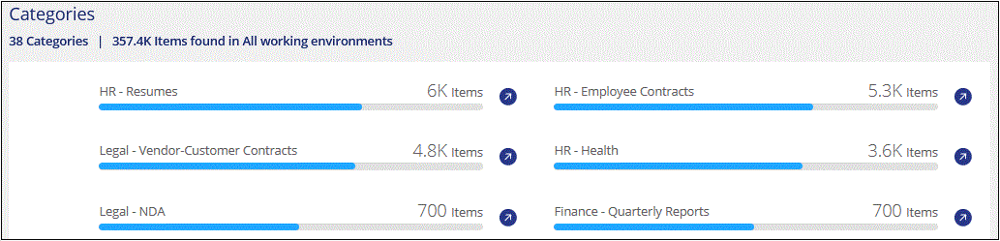

Request doc changes
Request doc changes Edit this page
Edit this page Learn how to contribute
Learn how to contributeViewing compliance details about the data stored in your organization
Contributors
Gain control of your private data by viewing details about the personal data and sensitive personal data in your organization. You can also gain visibility by reviewing the categories and file types that Cloud Data Sense found in your data.

|
The capabilities described in this section are available only if you have chosen to perform a full classification scan on your data sources. Data sources that have had a mapping-only scan do not show file-level details. |
By default, the Cloud Data Sense dashboard displays compliance data for all working environments and databases.

If you want to see data for only some of the working environments, select those working environments.
You can also filter the results from the Data Investigation page and download a report of the results as a CSV file. See Filtering data in the Data Investigation page for details.
Viewing files that contain personal data
Cloud Data Sense automatically identifies specific words, strings, and patterns (Regex) inside the data. For example, Personal Identification Information (PII), credit card numbers, social security numbers, bank account numbers, passwords, and more. See the full list.
Additionally, if you have added a database server to be scanned, the Data Fusion feature allows you to scan your files to identify whether unique identifiers from your databases are found in those files or other databases. See Adding personal data identifiers using Data Fusion for details.
For some types of personal data, Data Sense uses proximity validation to validate its findings. The validation occurs by looking for one or more predefined keywords in proximity to the personal data that was found. For example, Data Sense identifies a U.S. social security number (SSN) as a SSN if it sees a proximity word next to it—for example, SSN or social security. The table of personal data shows when Data Sense uses proximity validation.
-
At the top of Cloud Manager, click Data Sense and click the Compliance tab.
-
To investigate the details for all personal data, click the icon next to the personal data percentage.

-
To investigate the details for a specific type of personal data, click View All and then click the Investigate Results icon for a specific type of personal data; for example, email addresses.

-
Investigate the data by searching, sorting, expanding details for a specific file, clicking Investigate Results to see masked information, or by downloading the file list.

Viewing files that contain sensitive personal data
Cloud Data Sense automatically identifies special types of sensitive personal information, as defined by privacy regulations such as articles 9 and 10 of the GDPR. For example, information regarding a person’s health, ethnic origin, or sexual orientation. See the full list.
Cloud Data Sense uses artificial intelligence (AI), natural language processing (NLP), machine learning (ML), and cognitive computing (CC) to understand the meaning of the content that it scans in order to extract entities and categorize it accordingly.
For example, one sensitive GDPR data category is ethnic origin. Because of its NLP abilities, Data Sense can distinguish the difference between a sentence that reads "George is Mexican" (indicating sensitive data as specified in article 9 of the GDPR), versus "George is eating Mexican food."
|
|
Only English is supported when scanning for sensitive personal data. Support for more languages will be added later. |
-
At the top of Cloud Manager, click Data Sense and click the Compliance tab.
-
To investigate the details for all sensitive personal data, click the icon next to the sensitive personal data percentage.

-
To investigate the details for a specific type of sensitive personal data, click View All and then click the Investigate Results icon for a specific type of sensitive personal data.

-
Investigate the data by searching, sorting, expanding details for a specific file, clicking Investigate Results to see masked information, or by downloading the file list.
Viewing files by categories
Cloud Data Sense takes the data that it scanned and divides it into different types of categories. Categories are topics based on AI analysis of the content and metadata of each file. See the list of categories.
Categories can help you understand what’s happening with your data by showing you the types of information that you have. For example, a category like resumes or employee contracts can include sensitive data. When you investigate the results, you might find that employee contracts are stored in an insecure location. You can then correct that issue.
|
|
English, German, and Spanish are supported for categories. Support for more languages will be added later. |
-
At the top of Cloud Manager, click Data Sense and click the Compliance tab.
-
Click the Investigate Results icon for one of the top 4 categories directly from the main screen, or click View All and then click the icon for any of the categories.

-
Investigate the data by searching, sorting, expanding details for a specific file, clicking Investigate Results to see masked information, or by downloading the file list.
Viewing files by file types
Cloud Data Sense takes the data that it scanned and breaks it down by file type. Reviewing your file types can help you control your sensitive data because you might find that certain file types are not stored correctly. See the list of file types.
For example, you might be storing CAD files that include very sensitive information about your organization. If they are unsecured, you can take control of the sensitive data by restricting permissions or moving the files to another location.
-
At the top of Cloud Manager, click Data Sense and click the Compliance tab.
-
Click the Investigate Results icon for one of the top 4 file types directly from the main screen, or click View All and then click the icon for any of the file types.

-
Investigate the data by searching, sorting, expanding details for a specific file, clicking Investigate Results to see masked information, or by downloading the file list.
Viewing file metadata
In the Data Investigation results pane you can click  for any single file to view the file metadata.
for any single file to view the file metadata.

In addition to showing you the working environment and volume where the file resides, the metadata shows much more information, including the file permissions, file owner, whether there are duplicates of this file, and assigned AIP label (if you have integrated AIP in Cloud Data Sense). This information is useful if you’re planning to create Policies because you can see all the information that you can use to filter your data.
Note that not all information is available for all data sources - just what is appropriate for that data source. For example, volume name, permissions, and AIP labels are not relevant for database files.
When viewing the details for a single file there are a few actions you can take on the file:
-
You can move or copy the file to any NFS share. See Moving source files to an NFS share and Copying source files to an NFS share for details.
-
You can delete the file. See Deleting source files for details.
-
You can assign a certain Status to the file. See Applying tags for details.
-
You can assign the file to a Cloud Manager user to be responsible for any follow-up actions that need to be done on the file. See Assigning users to a file for details.
-
If you have integrated AIP labels with Cloud Data Sense, you can assign a label to this file, or change to a different label if one already exists. See Assigning AIP labels manually for details.
Viewing permissions for files
To view a list of all users or groups who have access to a file, and the types of permissions they have, click View all Permissions. This button is available only for files in CIFS shares, SharePoint, and OneDrive.

You can click the name of a user or a group and the Investigation page is displayed with the name of that user or group in the “User / Group Permissions” filter so you can see all the files that the user or group has access to.
Note that if you see SIDs (Security IDentifiers) instead of user and group names, you should integrate your Active Directory into Data Sense. See how to do this.
Checking for duplicate files in your storage systems
You can view if duplicate files are being stored in your storage systems. This is useful if you want to identify areas where you can save storage space. It can also be helpful to make sure certain files that have specific permissions or sensitive information are not unnecessarily duplicated in your storage systems.
Data Sense uses hashing technology to determine duplicate files. If any file has the same hash code as another file, we can be 100% sure that the files are exact duplicates — even if the file names are different.
You can download the list of duplicate files and send it to your storage admin so they can decide which files, if any, can be deleted. Or you can delete the file yourself if you are confident that a specific version of the file is not needed.
Viewing all duplicated files
If you want a list of all files that are duplicated in the working environments and data sources you are scanning, you can use the filter called Duplicates > Has duplicates in the Data Investigation page.
All files with duplicates from all file types (not including databases), with a minimum size of 50 MB, and/or containing personal or sensitive personal information, will show in the Results page.
Viewing if a specific file is duplicated
If you want to see if a single file has duplicates, in the Data Investigation results pane you can click  for any single file to view the file metadata. If there are duplicates of a certain file, this information appears next to the Duplicates field.
for any single file to view the file metadata. If there are duplicates of a certain file, this information appears next to the Duplicates field.
To view the list of duplicate files and where they are located, click View Details. In the next page click View Duplicates to view the files in the Investigation page.


|
You can use the "file hash" value provided in this page and enter it directly in the Investigation page to search for a specific duplicate file at any time - or you can use it in a Policy. |
Viewing Dashboard data for specific working environments
You can filter the contents of the Cloud Data Sense dashboard to see compliance data for all working environments and databases, or for just specific working environments.
When you filter the dashboard, Data Sense scopes the compliance data and reports to just those working environments that you selected.
-
Click the filter drop-down, select the working environments that you’d like to view data for, and click View.

Filtering data in the Data Investigation page
You can filter the contents of the investigation page to display only the results you want to see. If you want to save a CSV version of the content as a report after you have refined it, click the  button.
button.

-
The top-level tabs allow you to view data from files (unstructured data) or from databases (structured data).
-
The controls at the top of each column allow you to sort the results in numerical or alphabetical order.
-
The left-pane filters enable you to refine the results by selecting from the following attributes:
Filter Details Policies
Select a policy or policies. Go here to view the list of existing policies and to create your own policies.
Open Permissions
Select the type of permissions
User / Group Permissions
Enter a user name or group name, or partial name
File Owner
Enter the file owner name
Label
Select AIP labels
Working Environment Type
Select the type of working environment. Note that OneDrive and SharePoint are categorized under "Cloud Apps".
Working Environment name
Select specific working environments
Storage Repository
Select the storage repository, for example, a volume or a schema
File Path
Enter a partial or full path
Category
Select the types of categories
Sensitivity Level
Select the sensitivity level
Personal Data
Select the types of personal data
Sensitive Personal Data
Select the types of sensitive personal data
Data Subject
Enter a data subject’s full name or known identifier
File Type
Select the types of files
File Size
Select the file size range
Created Time
Select a range when the file was created
Discovered Time
Select a range when Data Sense discovered the file
Last Modified
Select a range when the file was last modified
Last Accessed
Select a range when the file was last accessed. For the types of files that Data Sense scans, this is the last time Data Sense scanned the file.
Duplicates
Select whether the file is duplicated in the repositories
File Hash
Enter the file’s hash to find a specific file, even if the name is different
Tags
Select the tag or tags
Assigned To
Select the name of the person to which the file is assigned
-
The Policies filter at the top of the Filters pane lists the custom filters that provide commonly requested combinations of filters; like a saved database query or Favorites list. Go here to view the list of predefined Policies and to see how you can create your own custom Policies.
What’s included in each file list report (CSV file)
From each Investigation page you can click the button to download file lists (in CSV format) that include details about the identified files. If Data Sense is scanning both Structured (database tables) and Unstructured (files) data, there are two reports contained in the downloaded ZIP file.
If there are more than 10,000 results, only the top 10,000 appear in the list.
The Unstructured Data Report includes the following information:
-
File name
-
Location type
-
Working environment name
-
Storage repository (for example, a volume, bucket, shares)
-
Working environment type
-
File path
-
File type
-
File size
-
Created time
-
Last modified
-
Last accessed
-
File owner
-
Category
-
Personal information
-
Sensitive personal information
-
Deletion detection date
A deletion detection date identifies the date that the file was deleted or moved. This enables you to identify when sensitive files have been moved. Deleted files aren’t part of the file number count that appears in the dashboard or on the Investigation page. The files only appear in the CSV reports.
The Structured Data Report includes the following information:
-
DB Table name
-
Location type
-
Working environment name
-
Storage repository (for example, a schema)
-
Column count
-
Row count
-
Personal information
-
Sensitive personal information